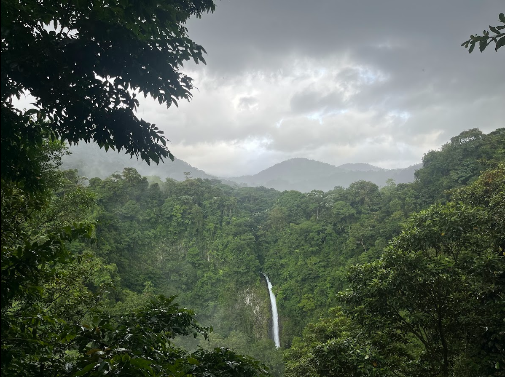

My name is Jocelyn Mo. I am a Computer Science student at Stevens Institute of Technology. I am currently looking for employment and am open to exploring any full or part-time positions! I will be graduating in December 2026, please feel free to reach out with the information below.
How to contact me: LinkedIn | jocelyn.e.mo@gmail.com
